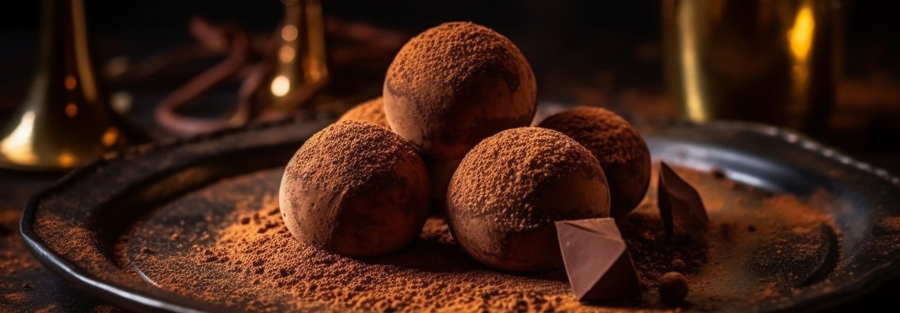
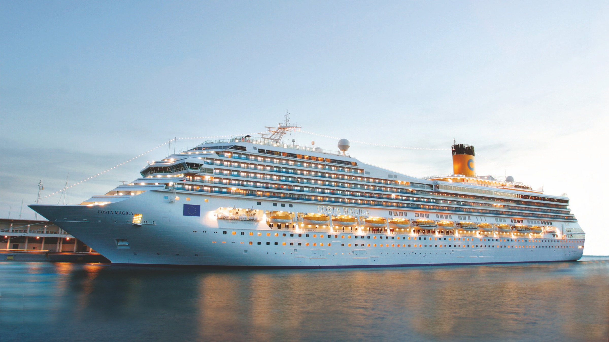
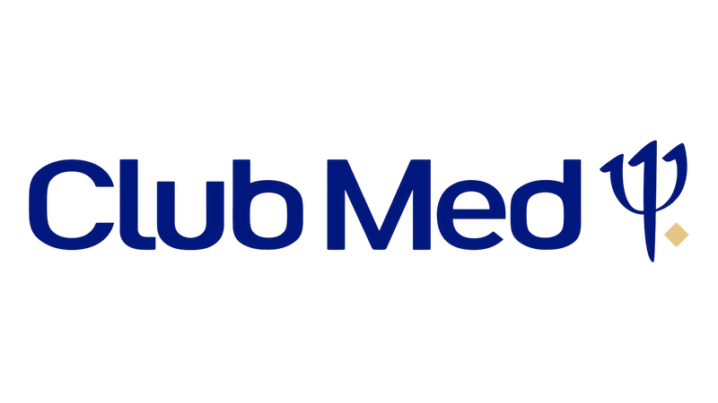
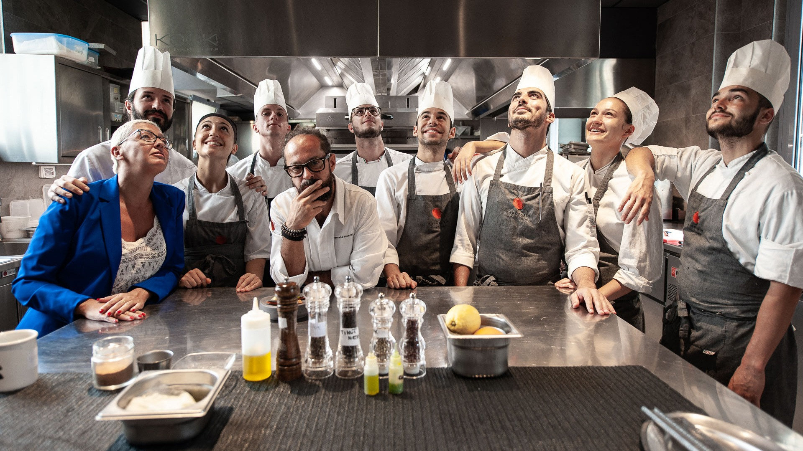
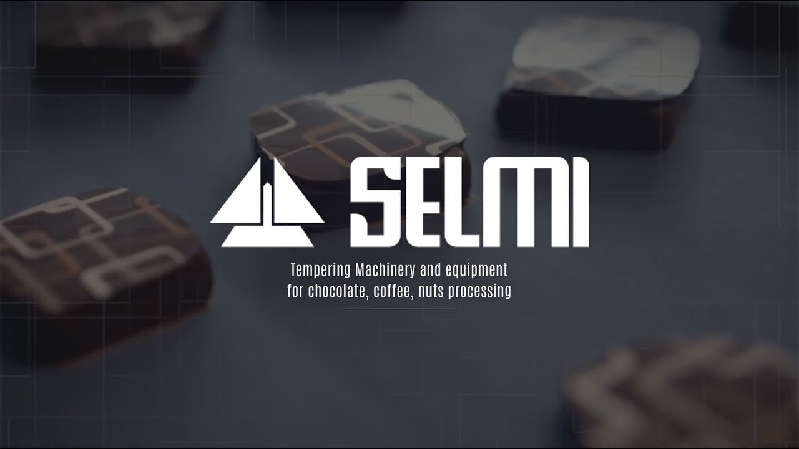
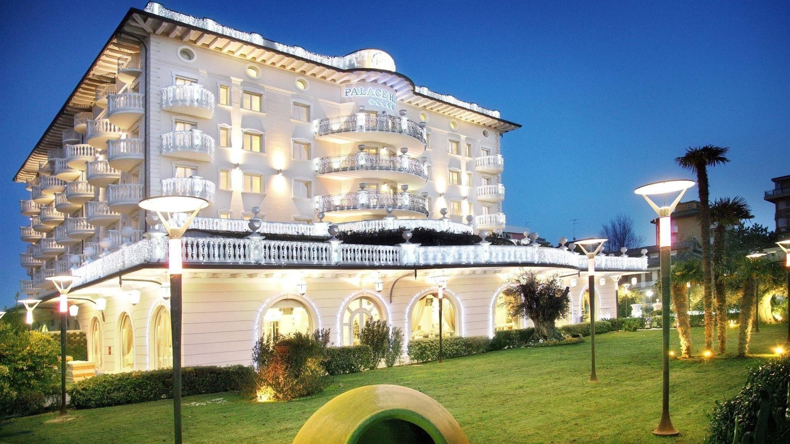
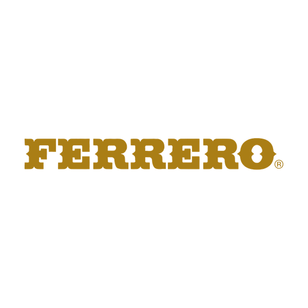
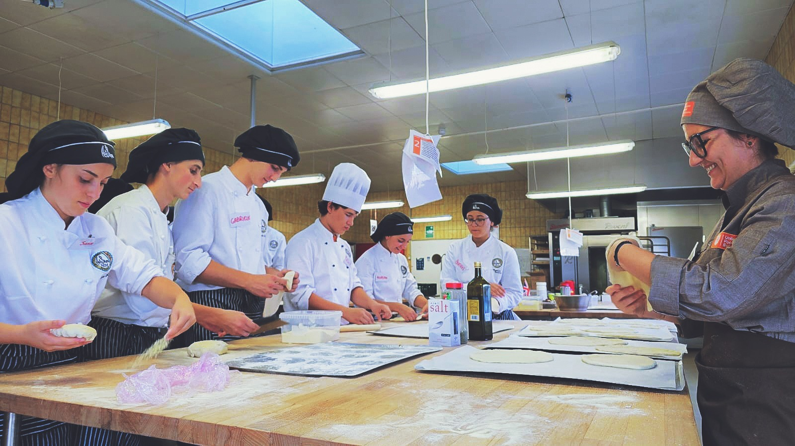
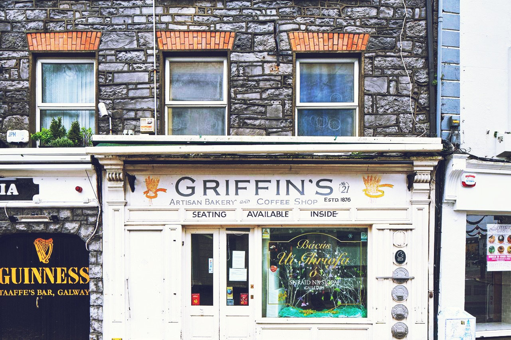
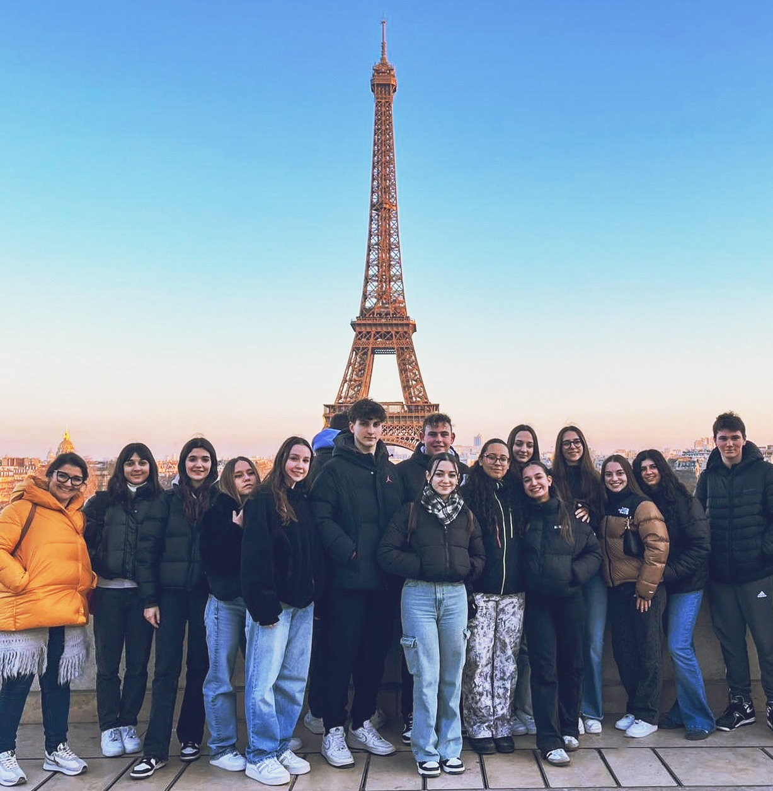

- I nostri fiori all’occhiello -

Gli stage si svolgono in laboratori artigianali di pasticceria e panetteria, caffetterie, ristoranti, resort, alberghi e aziende dolciarie.
Ad oggi collaboriamo con oltre 450 realtà in provincia di Cuneo, Asti, Torino, in Liguria, Valle d’Aosta e Milano.
I periodi di stage sono differenziati in base alla classe frequentata, così da garantire un’esperienza formativa progressiva e sempre più strutturata.
- Classi seconde: stage estivo
- Classi terze: 3 settimane a Pasqua
(con sospensione lezioni) + periodo estivo
- Classi quarte: 2 settimane a dicembre
(con sospensione lezioni) + periodo estivo






I.I.S.S. Piera Cillario Ferrero
Per gli studenti delle classi quarte nel corso dell’a.s. ci saranno le selezioni per:
– 15 tirocini all’estero della durata di un mese in Irlanda e Germania, finanziati dal progetto Erasmus+ "ImaginEU" della nostra scuola (partenza a settembre 2025)
– circa 10 tirocini all’estero della durata di un mese, finanziati da Erasmus+ in collaborazione con AFP Colline Astigiane (partenze a giugno-luglio 2025; possono candidarsi solo studenti già maggiorenni al momento della partenza)
– circa 6 tirocini all’estero della durata di un mese, finanziati da Erasmus+ in collaborazione con APRO Formazione
Per gli studenti delle classi quinte, ci sarà la possibilità di partecipare alle selezioni per:
– 4 tirocini di 3 mesi (partenza a settembre 2025) finanziati dal progetto Erasmus+ "ImaginEU" della nostra scuola
– circa 10 tirocini di 3 o 6 mesi (partenza a settembre 2025), finanziati da un progetto Erasmus+ di Apro Formazione (in questo caso la selezione sarà aperta però a tutte le scuole del territorio)
Si precisa che questi progetti non prevedono spese a carico delle famiglie.
È a carico delle famiglie unicamente il tragitto tra casa e aeroporto di partenza in Italia.



Restano sempre attivi gli scambi:
– con la Francia, nell’ambito del progetto Trans’Alp promosso dall’USR Piemonte (bandi di candidatura proposti alle classi seconde e terze che studiano francese; partenza a settembre 2025)
– con la Germania, nell’ambito dello scambio con Fuldatal organizzato dalla prof.ssa Bissolati e rivolto agli studenti delle classi seconde, terze e quarte del corso Commerciale Turistico (partenze a maggio e giugno 2025)
– con la Germania, nell’ambito del progetto D.u.I promosso dall’USR Piemonte (1 mobilità per uno/a studente/ssa del corso Turistico; partenza a settembre 2025)
Viene inoltre proposto agli studenti delle classi terze la possibilità di trascorrere 6 mesi/un anno all'estero con Intercultura (normalmente durante il quarto anno).
In questo caso le spese sono interamente a carico delle famiglie, ma è possibile candidarsi ad alcune borse di studio.
Di seguito sono riepilogate le 90 mobilità organizzate a cavallo tra la fine dell’a.s. 2023/24 e l'inizio dell’a.s. 2024/25
| Destinazione | N. studenti | Progetto |
|---|---|---|
| Creta (Grecia) | 6 | Erasmus+ in collaborazione con AFP Colline Astigiane |
| Valencia (Spagna) | 5 | Erasmus+ in collaborazione con APRO Formazione |
| Roskilde (Danimarca) | 15 | PON PCTO Estero |
| Berlino (Germania) | 15 | PON PCTO estero |
| Parigi (Francia) | 15 | PON PCTO estero |
| Valencia (Spagna) | 15 | PON PCTO estero |
| Sud Francia | 9 | Progetto Trans’Alp |
| Clonakilty (Irlanda) | 6 | Progetto finanziato da Fondazione CRT |
| Witten (Germania) | 1 | Progetto D.u.IT |
| Irlanda, Norvegia e Turchia | 3 | Mobilità con Intercultura e altre agenzie private (a pagamento) |
I.I.S.S. Piera Cillario Ferrero
L’Istituto Cillario Ferrero di Alba rientra nel catalogo dell’Offerta formativa della Regione Piemonte per l’apprendistato duale di primo livello per il conseguimento del Diploma di istruzione secondaria di secondo grado.
Il contratto di apprendistato di primo livello - come disciplinato dall’articolo 43 del decreto legislativo n. 81/2015 e dal D.M. 12 ottobre 2015 - è rivolto ai soggetti che hanno compiuto i 15 anni di età, sino al compimento dei 25 anni, iscritti all’interno di un percorso scolastico.
La finalità del contratto è il conseguimento di un titolo di studio della formazione secondaria di secondo grado, tramite un percorso “duale” che si realizza in parte presso l’istituzione scolastica che eroga la “formazione esterna” e in parte presso un’impresa che eroga la “formazione interna”.
L’obiettivo di questo approccio è quello di ridurre il disallineamento tra le competenze richieste dal mercato del lavoro e quelle in uscita dal percorso scolastico, per fornire una risposta efficace alla difficoltà delle imprese di reperire nel mercato del lavoro profili professionali specializzati, aumentando i livelli di occupazione giovanile.
Indicazioni di dettaglio possono essere reperite consultando il sito della Regione Piemonte al seguente link.
Negli anni l’istituto ha proposto e portato a compimento vari percorsi riguardanti gli indirizzi di studio, coinvolgendo le tre sedi di Alba, Neive e Cortemilia.
I percorsi relativi all'Arte Bianca, completati o ancora in fase di attuazione, sono sintetizzati nella seguente tabella:
| Anno scolastico | Tipo percorso | N° allievi | Azienda |
|---|---|---|---|
| 2023 - 25 | Biennale | 1 | Pasticceria “La Preferita” - Asti |
| 2023 - 25 | Biennale | 1 | Pasticceria “I dolci dell’isola” - Isolabella |
| 2023 - 25 | Biennale | 1 | Ristorante “all’enoteca” - Canale |
| 2023 - 25 | Biennale | 2 | Panetteria FuocoFarina - Alba |
| 2023 - 25 | Biennale | 1 | Panetteria “D&D” - Narzole |
| 2024 - 25 | Annuale | 1 | Pasticceria “Mighetto” - Asti |
| 2024 - 25 | Biennale | 3 | FERRERO INDUSTRIALE ITALIA S.R.L. (reparto UPS) |
| 2024 - 26 | Biennale | 1 | Pasticceria “Sorelle Balbo” - Canelli |
| 2024 - 26 | Biennale | 1 | Caffè Posta - Bra |
| 2024 - 26 | Biennale | 1 | Panetteria Giacosa - Alba |
| 2024 - 26 | Biennale | 1 | Panetteria Montaldo Alba |
| 2024 - 26 | Biennale | 1 | Ristorante L’Antinè - Barbaresco |
| 2024 - 26 | Biennale | 1 | Bar ristorante Naevia - Neive |
| 2024 - 26 | Annuale | 2 | Pasticceria Fratelli Boero - Monforte |
Sede dell'IISS Piera Cillario Ferrero tel: 0173/441944 / Indirizzo: Via Balbo, 8 - Alba
Sede associata di Neive tel: 0173/67168 / Indirizzo: Via Rocca, 10
Sito istituzionale www.cillarioferrero.edu.it
E-mail: artebiancaneive@cillarioferrero.it